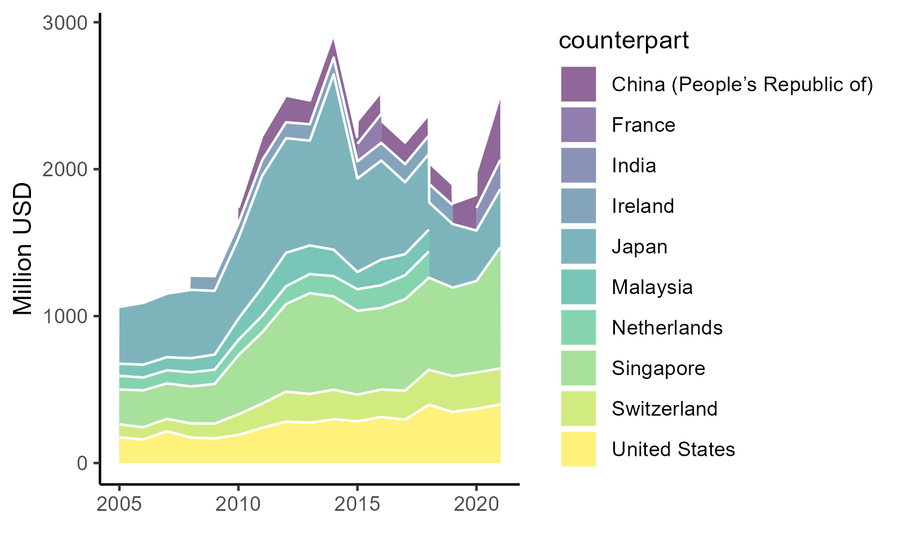
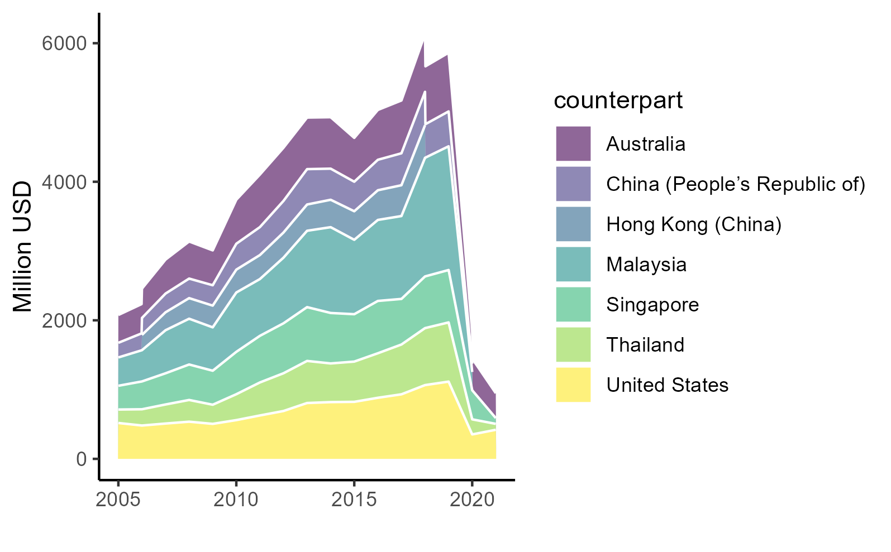
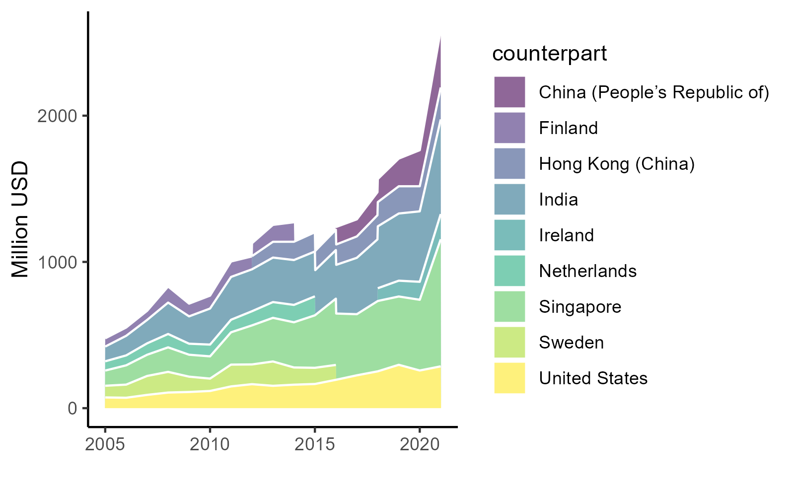
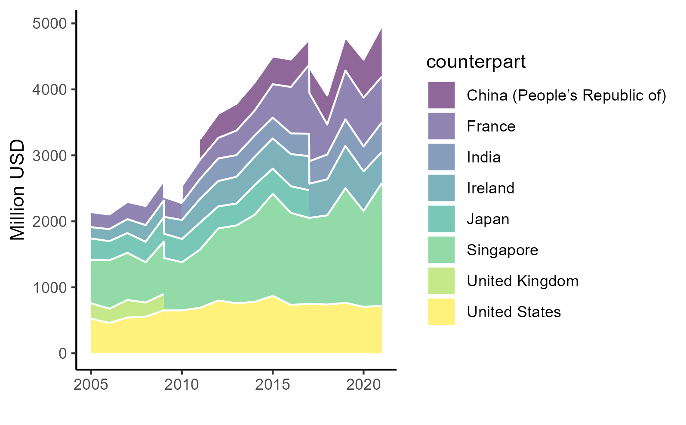
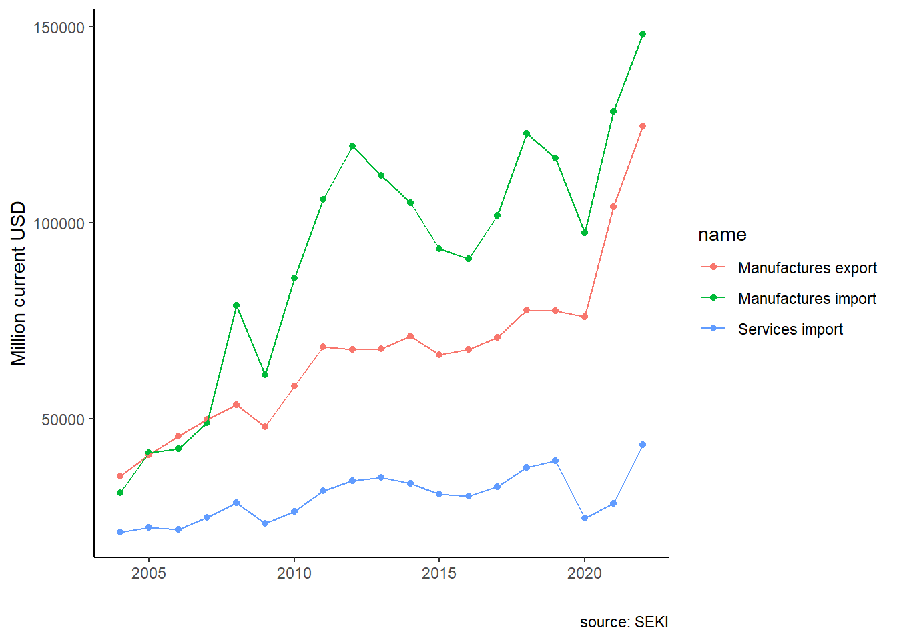

![]()

Services trade and the Indonesian third unbundling
Warning
This document is a work in progress. Please do not cite. Comments are welcomed. For replication see here
Introduction
Trade in services is growing in importance all over the world, Indonesia included. Figure 1 shows Indonesia’s export and import in services taken from Indonesian Statistic Bureau compiled by the Central Bank (Bank Indonesia, n.d.). Indonesia’s services trade is growing steadily from 2000, only to be interrupted by the COVID-19 pandemic. Export service is dominated by tourism, while import services is dominated by logistics. While the trend is increasing, it is evident that Indonesia’s import of services has always been dominating exports.
Indonesian government often concerned with deficit trade, but trade in services has often neglected in the discussion. Indeed, trade balance in goods are often far outweight the deficit in its services counterpart, as made apparent by Figure 2. However, while Indonesia’s trade balance fluctuates along with commodity prices and global demand in general, services trade deficit is consistent. Additionally, Indonesia’s reliance on services import went up right after COVID-19 and seems to stabilize in a higher than pre-pandemic level. With the increasing role of services in the global trade, the deficit looks to be even more important in Indonesia’s current account in the future.

The importance of trade in services goes beyond current account. With the ever decreasing cost of trade, separating a value up to tasks level (i.e., the third unbundling) is on the horizon (Baldwin 2011; Kimura 2018). Feedback mechanism from the third unbundling may benefits domestic manufacturing (Kimura 2018). Therefore, services trade may be important in the next stage of globalization.
This chapter have at least two objectives. First, we explores the general trade in services in Indonesia. We use BaTIS data (WTO/OECD 2022; Liberatore and Wettstein 2021) to show Indonesia’s most important services trade and country partners for both export and import. Trade in services has been increasing in importance, especially in the rise of deep trade agreements involving integration in trade in services as well as goods (Patunru 2023). Thus, trade in services’ profile of Indonesia will be most useful to Indonesian academics and policy makers.
Secondly, we investigate the potency of the feedback mechanism from the third unbundling a la Kimura (2018). That is, we look at how much imported services are embedded in Indonesia’s manufacturing sectors aggregated into ICIO classifications. We do this in two ways. First, we use ARDL (Pesaran and Smith 1995) to see whether services imports cointegrate with manufacturing exports and GDP. Secondly, we utilize Inter-Country Input-Output (ICIO) data from OECD (OECD 2023) to look at the importance of services for Indonesian manufacturing.
We arrange this chapter in the following. Section 2 discusses the development in research concerning services trade and its development in Indonesia, section 3 discusses about data and methods, section 4 explores Indonesian services trade as well as some third unbundling results, and section 5 concludes.
Review on services trade
The concept of trade has been evolving from the the way goods (and later services) value chain can be broken. Baldwin (2016) coined the term “unbundling” to express the variety of trade can be done by how much part of the supply chain of production can be traded across border. Lower costs in various trade barriers (trade costs, communication costs, and face-to-face costs) leads to more possible breakdowns of a value chain, promotes better division of tasks.
Kimura (2018) use this concept to argue three possible development paths for ASEAN member states to take. A country can move slowly, step-by-step by lowering trade cost traditionally from agriculture to machinaries to digital economy. One can also take a leap-frogging path, directly joining Global Value Chain by starting in the downstream, or even go directly to services trade, which is available through unbundling tasks in the service sectors. Lastly, A country can do a feedback mechanism, where advanced technology changes how old industries work. Looking at the last two approaches, services trade can be utilize either by learning from manufacturing to services export, or using services to create a better manufacturing.
Now with trade cost is even lower, unbundling the service sector become feasible. Some firms allowing some firms to leap ahead (Kimura 2018). Trade in services can be either source from abroad, or exported to foreign firms. Service sectors will accelerate both the second unbundling or third unbundling, allowing firms that utilize it to leap ahead of the competition.
Service sector can provide an important advantage for many firms, especially manufacturing ones. It can brigde information gap on the market, business customs and regulations in other countries, especially for new firms entering export market (Lodefalk 2014). As has been shown by (Melitz 2003), a non-trivial trade cost limits firm who can enter the export market. A reduction in trade cost in services would help lower the productivity threshold for firms, enabling more to enter the export market. This entrance would then induce learning-by-doing for these low productivity firms.
Lodefalk (2014) study Sweeden’s manufacturing firm in 2001-2007. They conclude that firms with higher services embeded in its final products increases its intensity of export. In the Indonesian context, Hing and Thangavelu (2023) find that 10 per cent increase in service intensity of a firm increase its productivity by 7 to 8 per cent. The two papers use firms level data with information on what services each firm purchase. Information on whether the service is imported, however, is lacking.
Lower services cost can reduce firms’ cost of service outsourcing. In the Indonesian context, Syahputri and Gupta (2024) uses gravity in service trade approach (Kimura 2018) to see whether IJEPA helps with improving Indonesia’s trade in services. Utilizing services data from BaTIS, Syahputri and Gupta (2024) find that IJEPA, one of the first comprehensive economic agreement in Indonesia, does not increase service trade between the two countries.
Indonesia does not seem to use services a lot. Services account for only around 2% of Indonesian manufacturing firms’ output (Hing and Thangavelu 2023), Indonesia’s trade in services is also falls short. Services trade requires easing in four different modes. Therefore, regulations typically rarely discussed in a trade agreement such as investment impediment, movement of natural persons and technical barrier all makes service trade much harder (Syahputri and Gupta 2024; Magiera 2011).
With hilirisasi or downstreaming policy, tendency to reduce import is more apparent. This policy’s objective was to increase the added value of the manufacturing sector by reducing foreign content in the domestic value chain. Local Content Requirements (LCR) put emphasize on domestic value added which means making production in the same area/country, running counter to joining internationally oriented global value chains/GVCs (Athukorala and Patunru 2023). GVCs involve dividing up production process across borders, equivalent of the second unbundling. Thus, hilirisasi and LCR policies ended up bundling up production processes that could be divvied up among countries. This meant undoing the second unbundling, let alone encouraging the third unbundling.
Data and Method
There are two main dataset used in this chapter. Namely, Balanced Trade in Services (BaTIS) and the OECD Inter-Country Input-Output (ICIO) dataset.
The BaTIS database was first launched in 2017 by World Trade organization (WTO) and Organization of Economic Cooperation and Development (OECD) in tandem (Liberatore and Wettstein 2021). Unlike trade in goods, trade in services are harder to track than trade in goods amid gap in data collection by various countries. BaTIS collect both ways from pairs of trading partners, reconcile difference between reporting countries’ trade. BaTIS is also used to build Trade in Value Added (TiVA) database and the ICIO database. BaTIS follows EBOPS 2010 sector classification (Liberatore et al. 2021) which can be observed in Table 1.
| Code | Category description |
|---|---|
| SA | Manufacturing services on physical inputs owned by others |
| SB | Maintenance and repair services n.i.e. |
| SC | Transport |
| SD | Travel |
| SE | Construction |
| SF | Insurance and pension services |
| SG | Financial services |
| SH | Charges for the use of intellectual property n.i.e. |
| SI | Telecommunications, computer, and information services |
| SJ | Other business services |
| SK | Personal, cultural and recreational services |
| SL | Government goods and services n.i.e. |
Trade services statistics are challenging in nature (Liberatore and Wettstein 2021). Only around 65% of total number of trade in services are recorded bilaterally. Unlike trade in goods, exports are recoreded better than imports, mainly due to advance countries being the majority of service exporters. Only 59% of trade value in BaTIS are fully reported, which are the reported 65% pair. The remaining 41% are estimated using share interpolations and gravity estimations. Since BaTIS is used for other databases including TiVA and ICIO, we should expect similar problems in these two databases.
Additionally, we also use the Indonesian trade in services statistics compiled by the Indonesian central bank called Statistik Ekonomi dan Keuangan Indonesia (SEKI) (Bank Indonesia, n.d.). It records Indonesia’s trade in services in the same manner as BaTIS, but with less detail on the trading partners. Moreover, SEKI is also used to observe Indonesia’s manufacturing GDP and goods exports and imports to estimate the third unbundling effect.
The OECD Inter-Country Input-Output (ICIO) decribes the sale and purchase relationships between sectors, consumers and the government within and across borders. ICIO estimates trades amonng 76 countries and 45 unique industries based on ISIC Revision 4(OECD, 2023). The database shows how much sectoral value added, both foreign and domestic, that is used by a certain industry.
In this study, we focus the manufacturing sector, specifically ISIC 10-27 in the ISIC rev. 4 classification. The ICIO aggregates these sectors into 16 sectors. We then aggregates all services that sell to these sectors into two categories, namely domestic services and foreign services.
On the third unbundling discussion, a good quality of firm-level data with information of its services sourced. Unfortunately, this information is not widely distributed in the Indonesian context. The second-best approach is to use international input-output table, which in this case ICIO is used.
Assume a manufacturing output and value added as a function of its factor or production. The nest of factor of production produces fully complementarily with its goods and services inputs. Let services inputs be complementarily used with goods inputs, but within the value produced by services, there is a degree of substitutability between foreign and domestic input as such:
\[ Y_{it}=f(AS^D_{it},AS^F_{it}) \tag{1}\]
for all \(i=\) manufacturing sectors and \(t=year\). A is the nest multiplier, \(S^D_i\) and \(S^F_i\) are total services purchased by industry \(i\), domestically and imported respectively.
Assuming a cobb-douglass relationship, then we can log-linearize Equation 1 to a simple linear system as such:
\[ y_{it}=a+\beta_d s^D_{it}+\beta_f s^F_{it}+\varepsilon_{it} \tag{2}\]
with a lower case represents the natural log of its uppercase counterpart.
To construct the dataset for the regression, we aggregate non-factor inputs from each manufacuring sectors, separated by whether it is from Indonesia or from other countries. All inputs from foreign countries are aggregated into foreign.
For comparison purpose, we also do the same for 4 countries in the region, namely Singapore, Malaysia, Thailand and Vietnam. Data from these 5 countries are then concatenated to add one more dimension, countries. Summary statistics on the data is shown in Table 2.
| all | IDN | |||||
|---|---|---|---|---|---|---|
| Mean | SD | Histogram | Mean | SD | Histogram | |
| value added | 4181.70 | 6845.40 | ▇▁ | 8150.56 | 12191.95 | ▇▁ |
| output | 15930.67 | 21741.55 | ▇▁ | 21529.33 | 29317.48 | ▇▁▁ |
| domestic services | 2804.36 | 3889.86 | ▇▂▁ | 3735.21 | 4176.07 | ▇▅▁ |
| foreign services | 845.74 | 1730.29 | ▇ | 420.05 | 339.95 | ▇▆▄▃▂▁ |
| domestic goods | 5213.09 | 9008.54 | ▇▁ | 7123.05 | 12296.21 | ▇▁ |
| foreign goods | 7057.46 | 9172.47 | ▇▁▁ | 10240.63 | 12983.59 | ▇▁▁ |
| for. services share | 5.76 | 3.70 | ▃▇▃▁ | 2.45 | 1.34 | ▇▆▆▇▄▃▂▂▁ |
| dom. services share | 18.02 | 6.73 | ▂▇▇▇▅▃▁▁ | 18.55 | 5.41 | ▂▆▇▇▅▄▅▃▁ |
| for. goods share | 47.62 | 11.39 | ▁▂▂▅▇▆▄▂▁ | 50.30 | 11.98 | ▁▁▃▇▅▇▅▁▂▁ |
| dom. goods share | 28.37 | 11.11 | ▃▄▇▇▄▂ | 28.60 | 8.57 | ▁▂▂▃▅▇▅▄▂▁ |
Table 2 shows Average and standard deviation as well as distribution of value added, output, domestic and foreign goods and services value and share. Unsurprisingly Indonesian manufacturing output and value added is higher than average of 5 countries, amid how large Indonesia is compared to its neighbor. Interestingly, Indonesian manufacturing value added from foreign goods and share is larger than the average, despite Indonesia’s protectionist tendency (Patunru 2023). Services, on the other hand, is different, as Indonesian services import lags compared to other countries.
Lastly, we run 6 fixed effect panel regressions. The first panel consists of two indices, country and sector, which both dummies are used as a fixed effect. The other 5 panels are fixed effect regressions by country, where only sectoral fixed effect is used. This way, we can discuss difference in coefficient between selected countries in the region. We use output and value added as our \(y_i\), so we will have 12 fixed effect panel regressions in total.
The main variable of interest is \(\beta_f\). The third unbundling suggests that since firms can now unbundle tasks up to service level, firms who can unbundle its services tasks will theoretically perform better, shown in its value added and output. Likewise, industries with easier services unbundling will benefited more from services trade since there will be more firms able to exploit the third unbundling in these industries. Therefore, we expect to see a \(\beta_f>0\).
Given the limitation of ICIO and its underlying sources (i.e., BaTIS), macro level analysis is added to complement the analysis. We use SEKI, Indonesian database compiled by Bank Indonesia, the central bank, to get services trade, manufactures trade, and manufacturing output. We perform ARDL analysis (Pesaran and Smith 1995) to see whether services trade cointegrates with manufacturing output and export.
We run four specifications:
\[ \begin{align} exM_t&=\alpha_0+\alpha_1 exM_{t-1}+\alpha_2 imM_t+\alpha_3 imSev_t+\nu_i \\ exM_t&=\gamma_0+\gamma_1 exM_{t-1}+\gamma_2 imM_t+\gamma_3 imSev_t+ \gamma_4 imM_{t-1}+\gamma_5 imSev_{t-1}+\upsilon_i \\ pdb_t&=\delta_0+\delta_1 exM_{t-1}+\delta_2 imM_t+\delta_3 imSev_t+\omega_i \\ pdb_t&=\theta_0+\theta_1 exM_{t-1}+\theta_2 imM_t+\theta_3 imSev_t+ \theta_4 imM_{t-1}+\theta_5 imSev_{t-1}+\eta_i \end{align} \tag{3}\]
where \(exM\) is log manufacturing exports, \(pdb\) is log manufacturing GDP, \(imM\) is log manufacturing imports and \(imSev\) is log services imports, all for Indonesian level in time \(t\), where \(t\) is from 2005 to 2023. The data availability is restricted by the services import which starts from 2005 in the SEKI data. Specifications that we run are ARDL(1,0,0), the least restrictive, and ARDL(1,1,1) which is considered from AIC, BIC and RMSE (Pesaran and Smith 1995; Natsiopoulos and Tzeremes 2022).
Discussions
Indonesian trade in services
Figure 3 shows total trade in services in 2021 in million current USD taken from BaTIS. Categories are based on the Table 1. Figure 3 (a) and Figure 3 (b) shows Indonesia’s top 6 exporter and importer of services in 2021. Singapore is the most important partner in trade in services for Indonesia. China, on the other hand, is the main buyer of Indonesia’s services export. Looking at Figure 3 (c) and Figure 3 (d), It is evident that Indonesia’s imports dominates exports in all categories bar travel (SD). Additionally, the highest traded services in Indonesia are transport (SC) and business services (SJ), aligned with global trade statistics (Liberatore et al. 2021).


We then focuses on Indonesia’s four most important services. These are transport (SC), travel (SD), ICT services (SI) and other business services (SJ). Other business services includes consulting management, research and development, and trade-related services (Liberatore et al. 2021). We look at top 6 partners in these sectors annually from 2005-2021 as existed in BaTIS, which can be seen in Figure 4 (exports) and Figure 5 (imports). Some countries change positions in these top 6 from time to time. A sudden miss of a country does not mean it stops trading with Indonesia, it’s just they are removed from the top 6.







Immediately, Figure 4 and Figure 5 show significant changes happened in 2020 and 2021, which corroborates the aggregated data in Figure 1. This is likely due to the COVID-19 pandemic that restrict movement of people.
This shock, however, affects differently between these four sectors. The transportation sector decrease quite significantly in 2020, but recovered relatively quickly in 2021. The impact in the business services is milder compared to the transportation sector. Meanwhile, we see a significant drop in travel services and have not recovered since. Meanwhile, ICT services are the winner here, with the top 6 partners experience significant increase in both 2020 and 2021.
Singapore is indeed important in both export and import. Singapore relationship with Indonesia in trade in services dwarves the rest, and this is true for almost all sectors. Travel export is slightly the exception. China and Australia dominates as destinations for Indonesian travel export. In Indonesia, most travel exports comes mainly from tourism. Indeed, tourism is Indonesia’s main services export. Pre-2020, travel services from 6 top exporters far dominates the other 3 categories. Pandemic punishes travel exports more than other sectors and it affects Indonesia’s overall balance of trade in services.
Overall, countries important for Indonesia in trade in services is not significantly different from trade in goods. Singapore leads, but there are also the US, some EU countries, and other RCEP member states. Trade agreements play a huge role in improving trade in services. Measures that affects movement of natural persons, and other non-tariff measures like computing requirement and investment list are crucial as trade in services can be done in 4 different modes that got affected by these rules.
Typically, overseeing trade in services and regulatory environment required to increase flow of trade in services are more challenging than trade in goods. In Indonesia, these regulations are often oversaw by different Ministries, and typically discussed separately from other sectors or trade negotiations (Magiera 2011; Lindblad 2015). Discussing regulatory environment to improve trade in services would require coordination which is costly compared to trade in goods.
For example, easing tourism visa requirement typically conducted unilaterally with no consultation with other ministries or any agreements. These kinds of regulation relies more on each Ministers than agreement mechanisms. While IJEPA doesn’t seem to affect trade in services much between Indonesia and Japan (Syahputri and Gupta 2024), IACEPA between Indonesia and Australia seems to improve Australian services export through investment in university and hospital.
More importantly, easing services trade may benefit Indonesia through the third unbundling mechanisms. Many exported services are skill-intensive products, which arguably not Indonesia’s main strength. If these services are important in a production chain of final goods, then outsourcing services production (e.g., design and research) will benefit Indonesian manufacturing. The next section explores an indicative evidence toward this argument.
Manufacturing
ICIO Panel regression
We first turn to our panel regression shown in Equation 2. As discussed, we run a total 12 regressions divided into two tables. Table 3 shows results for log of value added as the dependent variable, while Table 4 is on output. Each table has 6 regressions, which the first column show a result from all countries combined and the rest are from each countries.
| all | IDN | SGP | VNM | THA | MYS | |
|---|---|---|---|---|---|---|
| + p < 0.1, * p < 0.05, ** p < 0.01, *** p < 0.001 | ||||||
| lfs | 0.159 | -0.207 | 0.172 | 0.358** | -0.175* | 0.082 |
| (0.159) | (0.283) | (0.170) | (0.094) | (0.062) | (0.264) | |
| lds | 0.708*** | 0.735* | 0.587* | 0.479*** | 1.112*** | 0.808*** |
| (0.157) | (0.280) | (0.209) | (0.086) | (0.066) | (0.173) | |
| Num.Obs. | 1520 | 304 | 304 | 304 | 304 | 304 |
| R2 | 0.825 | 0.863 | 0.984 | 0.993 | 0.992 | 0.945 |
| R2 Within | 0.658 | 0.423 | 0.780 | 0.984 | 0.952 | 0.727 |
First, we look at value added. We can see from Table 3 that domestic services are generally correlates with domestic manufacturing value added. However, foreign value added does not seem to be important in the domestic value added of manufacturing. Vietnam is the exception, where foreign services seem to move together with domestic value added.
| all | IDN | SGP | VNM | THA | MYS | |
|---|---|---|---|---|---|---|
| + p < 0.1, * p < 0.05, ** p < 0.01, *** p < 0.001 | ||||||
| lfs | 0.221+ | -0.070 | 0.179 | 0.471** | 0.112+ | 0.155 |
| (0.105) | (0.141) | (0.138) | (0.135) | (0.062) | (0.166) | |
| lds | 0.745*** | 0.910*** | 0.640** | 0.547*** | 0.865*** | 0.745*** |
| (0.103) | (0.129) | (0.166) | (0.123) | (0.062) | (0.103) | |
| Num.Obs. | 1520 | 304 | 304 | 304 | 304 | 304 |
| R2 | 0.962 | 0.954 | 0.993 | 0.995 | 0.996 | 0.987 |
| R2 Within | 0.921 | 0.880 | 0.914 | 0.990 | 0.973 | 0.891 |
Next, we go to Table 4 to look at the relationship between services inputs and manufacturing output. In this case, the general correlation of services inputs are positive. But again, this positive impact is driven mainly by Vietnam and weakly by Thailand. Most correlation still comes from domestic services value added.
The results from Thailand seems to suggests the effect of volume (Athukorala and Patunru 2023).That is, while domestic value added is reduced by increasing foreign input, but the resulting output means that the reduction of domestic value added is covered by output volume. Indeed, Thailand’s manufacturing tends to be sold abroad a bit more than large economy like Indonesia.
ARDL results
We complement previous analysis with more macro, less structured approach. We test whether services import and manufacturing export and output moves together. Figure 6 shows data we use. Manufacturing GDP is omitted for scaling reason, but we can see the vast difference between merchandise trade and services trade during the pandemic in 2020. While we use internet and computer application services more during the pandemic, the huge drop in travels visually dominates Indonesia’s import services. In fact, it is because we can have digital presence that traveling abroad is less needed even as restriction eases.

The log version of variables in Figure 6 is used for the regression, along with log of manufacturing GDP. Summary statistics are presented in Table 5.
| Mean | Median | SD | Histogram | |
|---|---|---|---|---|
| log value added | 7.62 | 7.67 | 1.26 | ▁▁▃▅▇▆▃▁ |
| log output | 9.01 | 9.06 | 1.21 | ▁▂▄▆▇▄▂ |
| log foreign services | 5.98 | 6.00 | 1.21 | ▂▄▇▇▄▁ |
| log domestic services | 7.23 | 7.23 | 1.25 | ▁▁▃▅▇▆▄▂▁ |
Results from executing Equation 3 is shown in Table 6. There are four column, with the first two use log manufactures exports as the left hand-side variable while the latter two uses log manufacturing GDP. ARDL(1,0,0) is used for the first column and ARDL(1,1,1) is used for the second column of each, as discussed in the previous section.
| Export 1 | Export 2 | GDP 1 | GDP 2 | |
|---|---|---|---|---|
| + p < 0.1, * p < 0.05, ** p < 0.01, *** p < 0.001 | ||||
| (Intercept) | 0.704 | 1.354+ | 0.112 | 0.243+ |
| (0.724) | (0.692) | (0.127) | (0.128) | |
| L(exM, 1) | 0.676** | 1.135*** | ||
| (0.222) | (0.177) | |||
| imM | 0.273 | 0.307* | -0.003 | -0.023 |
| (0.184) | (0.127) | (0.020) | (0.022) | |
| imSev | -0.106 | -0.130 | 0.098** | 0.110*** |
| (0.247) | (0.146) | (0.029) | (0.024) | |
| L(imM, 1) | -0.151 | 0.031 | ||
| (0.166) | (0.023) | |||
| L(imSev, 1) | -0.485* | -0.083* | ||
| (0.182) | (0.030) | |||
| L(pdb, 1) | 0.917*** | 0.938*** | ||
| (0.024) | (0.022) | |||
| Num.Obs. | 18 | 18 | 18 | 18 |
| R2 | 0.881 | 0.967 | 0.997 | 0.998 |
| Log.Lik. | 32.291 | 43.772 | 70.818 | 76.085 |
| RMSE | 0.04 | 0.02 | 0.00 | 0.00 |
Table 6 shows that Indonesia’s current import service does not seem to contribute much to the country’s manufacturing export. The coefficient is found to be negative but not different from zero. This does not seem to be surprising since it corroborates findings in Table 3 and Table 3. Additionally, Indonesian firms does not seem to have much in house services to begin with, and those who do are only a small fraction of very productive firms (Hing and Thangavelu 2023).
For manufacturing output, however, we find that import services correlates significantly with manufacturing output. A 1% increase in service import correlates with a 0.1% increase in manufacturing output. This correlation may stem from imported goods import. That is, Indonesian manufacturers requires various imported intermediate inputs. Therefore, increasing production requires importing various goods, increasing the use of transport service, which is dominated by foreign firms. This explains why imported service does not correlate with manufacturing export, and why manufactures import correlates positively with exports.
This findings seem to suggests that Indonesian manufacturing use services mostly for international trade purposes. Since transport dominates Indonesia’s trade in services, it seems to suggest that Indonesian manufacturing does not use services outside of transport. Something like consulting for marketing purposes or research and development sourced from abroad is not yet widely used by Indonesian manufacturing. Considering the government is trying to boost manufacturing output using Indonesia 4.0 program, this type of services may have a room to grow.
This study is limited by the use of a rather aggregated data. While this study can show a more helicopter view of Indonesia’s trade in services dynamics, it failed to capture the benefit of services trade in a more micro setting. We do not have the same level access of manufacturing firms’ data as Hing and Thangavelu (2023), but even then it cannot differentiate domestically sourced services with foreign services. It will require a set of data Indonesians not yet produce, which may presents with an opportunity for future data collection project and studies.
But research in the growth of services sector in general is even more important. The third unbundling suggests Indonesia and the ASEAN region in general can be benefited from the growth of service sectors and embedding services to overall network of productin, even within service sectors (Kimura 2018). With more granular data on the service level, future studies on the opportunities to grow from services is promising.
Conclusions and policy implication
With the reduction of trade cost, face-to-face communication in particular, the third unbundling can potentially be the next form of globalization and trade in services to be the next source of growth for many countries including Indonesia. Additionally, Indonesian government has long been very careful with Indonesia’s current account deficit, but have not really paid close attention to trade in services which its always in deficit. This chapter covers the snapshot on Indonesia’s services sector trade in EBOPS classification and maps how much it trade and which countries are important. Moreover, we investigate, using macro data, whether services contribute to the manufacturing sector.
Our finding suggests Indonesia have not really use much of its services trade to support manufacturing. Moreover, with much of the service imported are transport, it is suggestive that most of the services import is not yet embedded in its manufacturing sector. In fact, with manufacturing sector mostly import inputs and exploit domestic market, transport service will ended up be the main driver of service sector deficit.
In terms of surplus, travel is Indonesia’s main service export. This is driven by tourism, which is highly concentrated in some areas and got punished heavily by COVID-19 pandemic. Looking for other source of growth in services production and export thus become one of the main challenges for Indonesia. Indonesia should utilize its deep trade agreement better to improve its service sector as an end product or as inputs for other sectors like manufacturing. Additionally, with services often requires highly educated people, improvement in the capability to build human capital is even more crucial, considering the third unbundling is said to be the new face of globalization.
References
Athukorala, Prema-chandra, and Arianto A. Patunru. 2023. “Domestic Value Added, Exports and Employment: An Input–Output Analysis of Indonesian Manufacturing.” Journal Article. Bulletin of Indonesian Economic Studies 59 (3): 365–90. https://doi.org/10.1080/00074918.2022.2134554.
Baldwin, Richard. 2011. “21st Cebtury Regionalism: Filling the Gap Between 21st Century Trade and 20th Century Trade Rules.” Journal Article. CEPR Policy Insight 56.
———. 2016. The Great Convergence: Information Technology and the New Globalization. Book. Belknap Press of Harvard University Press.
Bank Indonesia. n.d. “Statistik Ekonomi Dan Keuangan Indonesia.” Dataset. Bank Indonesia,. https://www.bi.go.id/id/statistik/ekonomi-keuangan/seki/Default.aspx#headingFour.
Hing, Vutha, and Shandre Mugan Thangavelu. 2023. “Does Servicification Enhance Firm Productivity? Evidence from Indonesia.” Journal Article. Journal of Southeast Asian Economies 40 (3): 299–317. https://remote-lib.ui.ac.id:2065/stable/27278631.
Kimura, Fukunari. 2018. “Unbundling Regimes and Development Strategies in ASEAN: Old Issues and New Challenges.” Journal Article. Southeast Asian Economies 35 (1): 13–21. https://doi.org/10.1355/ae35-1c.
Liberatore, Antonella, Rodolfo Ostolaza, Malik Bani Hani, Silvia Amiel, Maria Fernanda L’Hopital, Markie Muryawan, Vysaul Nyirongo, and Habibur Khan. 2021. “C.6 Trade in Services Classifications.” Report. International Monetary Fund. https://www.imf.org/external/pubs/ft/bop/2021/pdf/VM2/21-05.pdf.
Liberatore, Antonella, and Steen Wettstein. 2021. “The OECD-WTO Balanced Trade in Services Database (BaTIS).” Report. OECD/WTO. https://www.oecd.org/content/dam/oecd/en/data/methods/OECD-WTO-Balanced-Trade-in-Services-database-methodology-BPM6.pdf.
Lindblad, J. Thomas. 2015. “Foreign Direct Investment in Indonesia: Fifty Years of Discourse.” Journal Article. Bulletin of Indonesian Economic Studies 51 (2): 217–37. https://doi.org/10.1080/00074918.2015.1061913.
Lodefalk, Magnus. 2014. “The Role of Services for Manufacturing Firm Exports.” Journal Article. Review of World Economics / Weltwirtschaftliches Archiv 150 (1): 59–82. http://remote-lib.ui.ac.id:2063/stable/44211761.
Magiera, Stephen. 2011. “Indonesia’s Investment Negative List: An Evaluation for Selected Services Sectors.” Journal Article. Bulletin of Indonesian Economic Studies 47 (2): 195–219.
Melitz, Marc J. 2003. “The Impact of Trade on Intra-Industry Reallocations and Aggregate Industry Productivity.” Journal Article. Econometrica 71 (6): 1695–725. https://doi.org/10.1111/1468-0262.00467.
Natsiopoulos, Kleanthis, and TNickolaos G Tzeremes. 2022. “ARDL Bounds Test for Countegration: Replicating the Pesaran Et Al. (2001) Results for the UK Earnings Equation Using r.” Journal Article. Journal of Applied Econometrics 37 (5): 22. https://doi.org/doi.org/10.1002/jae.2919.
OECD. 2023. “OECD Inter-Country Input-Output Database.” Dataset. http://oe.cd/icio.
Patunru, Arianto A. 2023. “Trade Policy in Indonesia: Between Ambivalence, Pragmatism and Nationalism.” Journal Article. Bulletin of Indonesian Economic Studies 59 (3): 311–40. https://doi.org/10.1080/00074918.2023.2282821.
Pesaran, M. Hashem, and Ron Smith. 1995. “Estimating Long-Run Relationships from Dynamic Heterogeneous Panels.” Journal Article. Journal of Econometrics 68 (1): 79–113. https://doi.org/https://doi.org/10.1016/0304-4076(94)01644-F.
Syahputri, Evanti Andriani, and Krisna Gupta. 2024. “Analysis of the Effect of Indonesia-Japan Economic Partnership Agreement (IJEPA) on the Trade in Service Sector in Indonesia.” Journal Article. Jurnal Manajemen Industri Dan Logistik 8 (1). https://doi.org/10.30988/jmil.v8i1.1356.
WTO/OECD. 2022. “OECD-WTO: Balanced International Trade in Services - EBOPS 2002 (Edition 2021).” Dataset. OECD Statistics on International Trade in Services (database). https://doi.org/10.1787/54a469fc-en.